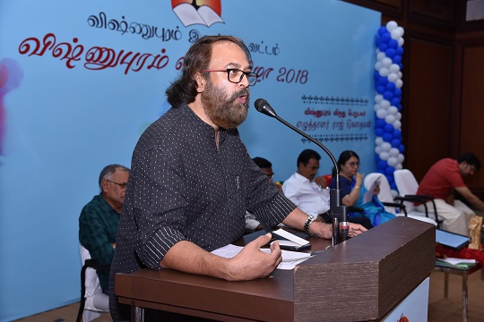
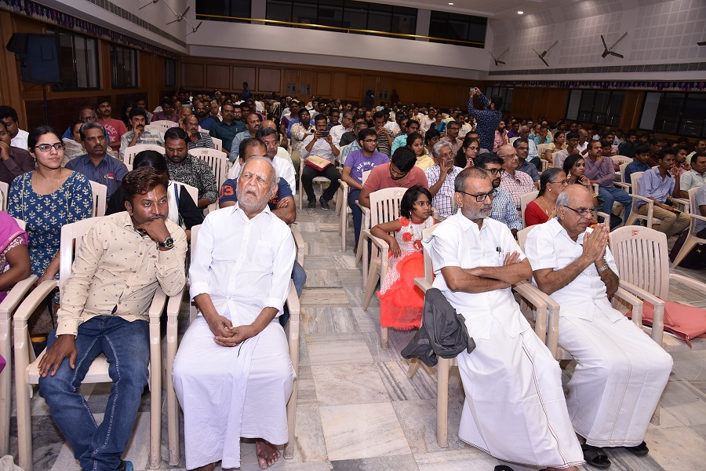
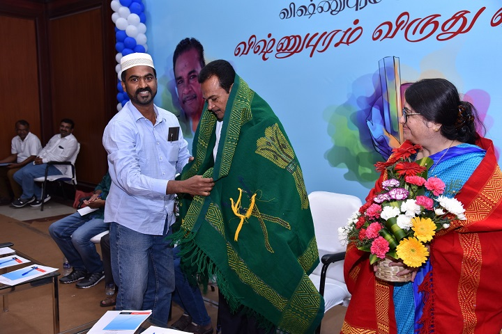
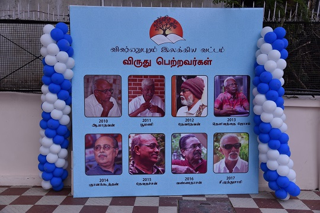
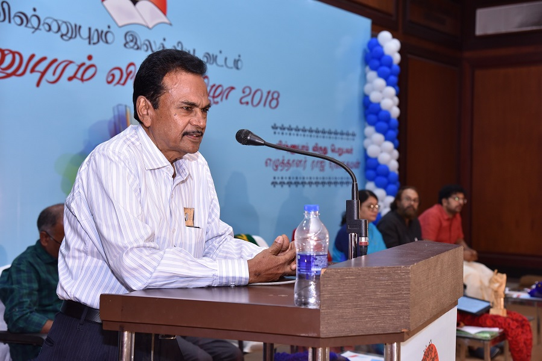
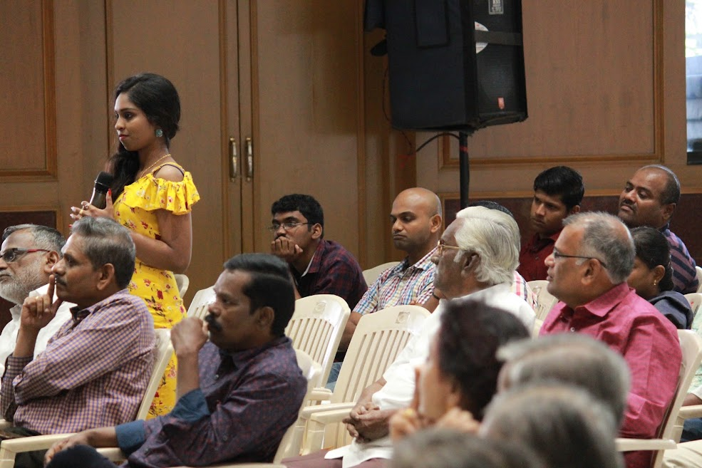
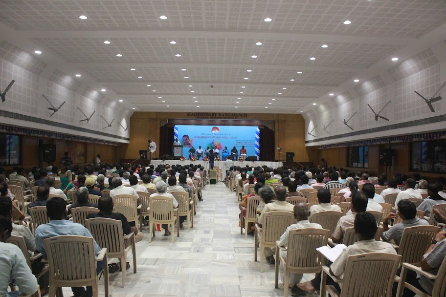
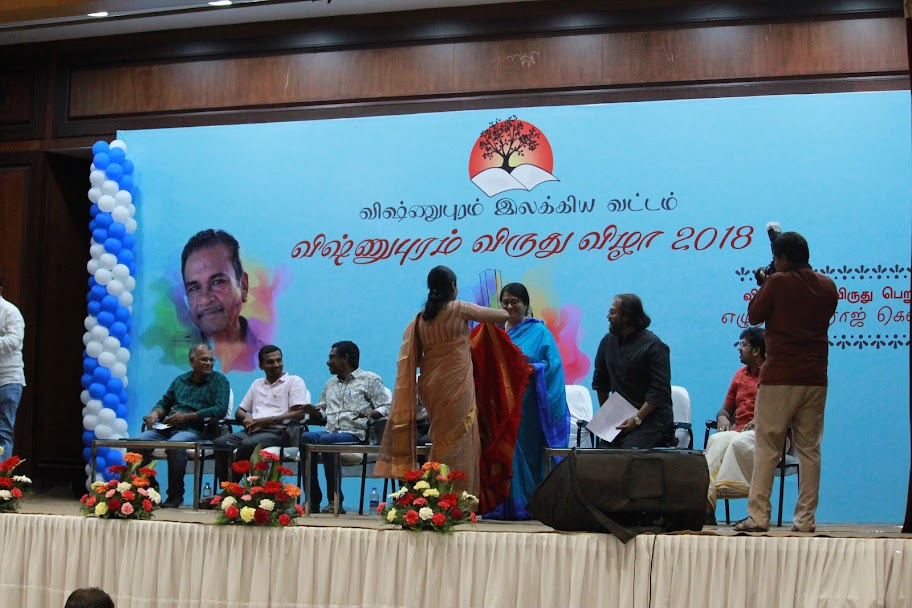
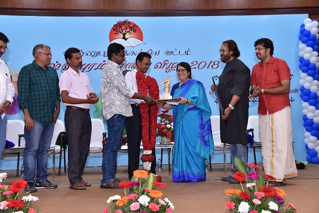

Living Tamil Association for World Literature (LTAWL)
The ninth Vishnupuram Literary Circle Award went to Professor Raj Gautham, honoured over four days of reading and conversation in Coimbatore — translated in detail from the original Tamil accounts.
Born S. Pushparaja in 1950 in Virudhunagar district, and known to Tamil readers as Raj Gautham, the 2018 laureate is remembered as one of the pioneering voices in Tamil Dalit thought and cultural studies. He studied Tamil literature and sociology at Annamalai University, and later wrote a doctoral thesis on the very same A. Madhavan who had received the first Vishnupuram Award in 2010 — a quiet circularity the Circle's members did not fail to notice. He taught Tamil at government colleges in Puducherry and Karaikal until his retirement in 2011.

The citation credited him with opening "a new beginning in Tamil Dalit thinking" and advancing the study of Tamil culture from a Dalit vantage point, at a time when few academic or literary institutions were prepared to do so. Beyond his scholarly and cultural criticism, Raj Gautham wrote three semi-autobiographical novels, including Siluvai Raja Sarithiram and Kalachumai, drawing on his own life to write a history that conventional literary institutions had largely left untold. He was the ninth recipient of the award, following laureates that included A. Madhavan and Poomani.


The gathering ran across 21–24 December 2018, at the Rajasthani Sangam hall in Coimbatore, drawing an audience that grew to roughly 300–350 readers — well beyond what the organisers, Senthilkumar, Ram Kumar, Nadarajan and Meenambikai, had originally planned for. Accommodation was arranged across three rented buildings, and catering, led by Vijay Suryan of Surya Solutions, was expanded on short notice to cover around a hundred more guests than expected. Readers travelled in from as far as Switzerland, Singapore, Australia, London, Germany, the United States and Dubai — some of them booking flights specifically to be there.

Rather than a single ceremonial evening, the festival unfolded as thirteen separate discussion panels spread across roughly fifteen hours of literary conversation, with writers including Devibharathi, Stalin Rajangam, Saravanan Chandran and Sunil Krishnan speaking directly with readers. On the evening of 23 December, the gathering screened a short documentary, Paattum Thogaiyum ("Songs and Collections"), directed by K. P. Vinodh, tracing Raj Gautham's life and thinking. The days closed with a literary quiz that turned the festival's spirit of engaged, informal reading into something closer to play.


What stayed with many who attended was not any single speech but the format itself — four days built around readers and writers in direct conversation rather than formal ceremony, which organisers and attendees alike described simply as kalippu, a shared joy in literature held in common.



Translated and adapted from the original Tamil accounts: jeyamohan.in/116410, jeyamohan.in/116502 and jeyamohan.in/116328